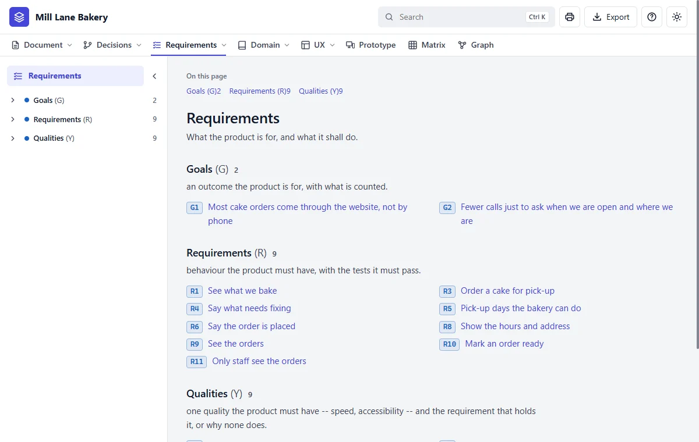
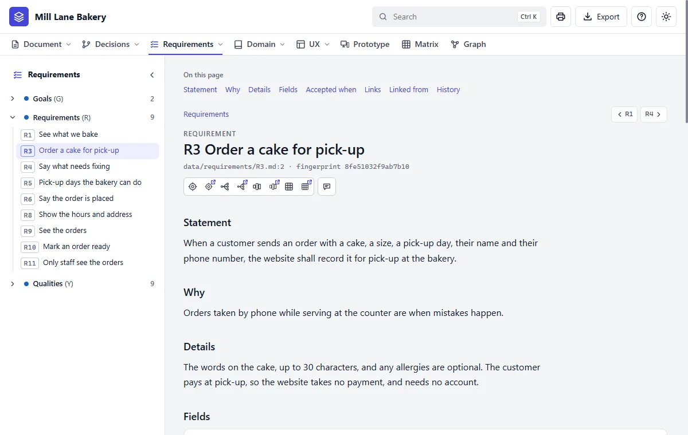
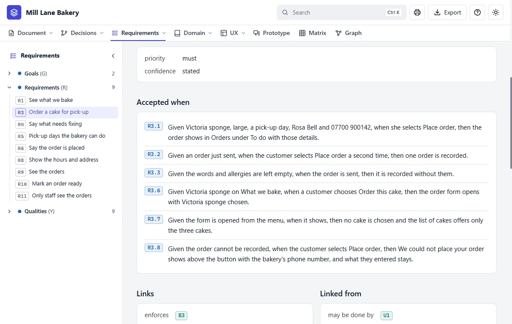

Step 9 of 20 · See what you got
Your requirements
Do this
Click Requirements in the bar. A requirement is one promise the website makes.


How to read one
| Section | Read it as |
|---|---|
| Statement | One sentence someone outside could check |
| Why | Who needs it, and what goes wrong without it |
| Details | What it covers and what it doesn't |
| Accepted when | The checks: given this, when that, then the other |
| Links | What it stands on |
| Linked from | What stands on it |

If something's wrong, just say so
R3 is wrong: customers must give an email address too.